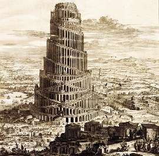

Борис Акунин
Мой календарь
Одна из главных революций человеческой цивилизации произошла, когда мы стали пользоваться социальными сетями. Раньше мы были каждый сам по себе, ограниченные небольшим кругом своих родственников и знакомых, с весьма туманным представлением о том, как и чем живут все другие люди.
Насколько же лучше я знаю и понимаю своих современников теперь. Даже знакомых, которые иногда открываются с неожиданной стороны.
А все благодаря тому, что 4 февраля 2004 года два юных шалопая, гарвардские студенты Марк Цукерберг и Эдуардо Саверин запустили Фейсбук, вложив в это предприятие по одной тысяче долларов. Первому было девятнадцать лет, второму двадцать один.
Спасибо, ребята. Мне кажется, вас мало благодарят. Из-за вас мир стал намного ближе и человечней, сотни миллионов людей избавились от одиночества, были услышаны, нашли друг друга, а может быть, самое главное - возникло новое, виртуальное общество, для которого расстояния и барьеры не существуют.
«Бог не сделал людей равными, эту задачу выполнил полковник Кольт», говорили когда-то про изобретателя револьвера. Бог, кажется, не очень хотел и чтобы мы нашли общий язык - даже специально Вавилонскую башню разрушил. «И сказал Господь: вот, один народ, и один у всех язык; и вот что начали они делать, и не отстанут они от того, что задумали делать; сойдем же и смешаем там язык их, так чтобы один не понимал речи другого».
А теперь на наших глазах выстроилась новая всемирная башня. И кому, спрашивается, хуже от того, что один слышит и понимает речи другого?